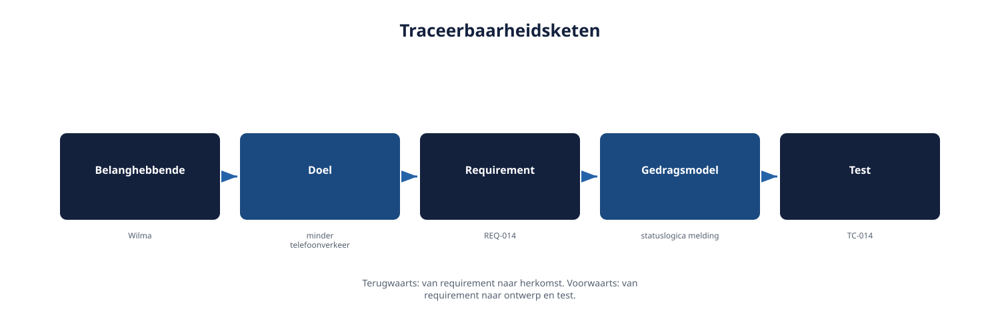

Deel 9 — Valideren, afstemmen en de beheerbasis: attributen, prioritering, versies
Slidedeck · Ductus-cursus Requirements engineering · niveau 1 · deel 9 van 10 · 35 slides
Slide 1 — Titel
Valideren, afstemmen en de beheerbasis
Attributen, prioritering, versies
Cursus Requirements Engineering — Niveau 1, deel 9
Ductus
Slide 2 — Vandaag
- Valideren versus verifiëren
- De beheerbasis: vijf attributen
- Prioriteren op bijdrage, niet op volume
- Traceerbaarheid
- Wijzigingsbeheer in vier stappen
- Bevinding R6 én R7 sluiten
Slide 3 — Citaat
"Toen het budget op was, vroeg de stuurgroep wat eruit kon. We konden alleen maar zeggen: alles is verplicht."
Post-mortem WGP 2.0
Slide 4 — Citaat
"Er zijn honderden changes doorgevoerd. Bij oplevering kon niemand meer uitleggen waarom scherm 12 bestond."
Post-mortem WGP 2.0
Slide 5 — Twee bevindingen. Eén oorzaak.
Geen structuur die een requirement méér maakt dan zijn tekst.
Slide 6 — 1. Valideren versus verifiëren
Slide 7 — Twee vragen
| Vraag | |
|---|---|
| Verifiëren | Is dit gebouwd zoals afgesproken? |
| Valideren | Is dit wat de belanghebbende werkelijk nodig had? |
Slide 8 — Figuur 9-1

Slide 9 — Het bouwteam verifieerde nauwgezet.
Ze bouwden wat er stond.
Wat ontbrak: doorlopend toetsen of dat nog steeds de echte behoefte was.
Slide 10 — Opdracht 9.1 — Valideren of verifiëren?
Vijf activiteiten.
Individueel · 10 minuten
Slide 11 — 2. De beheerbasis
Slide 12 — Vijf attributen, elke requirement
- Identificatie — een uniek kenmerk
- Herkomst en rationale — wie, waarom
- Status — voorgesteld, goedgekeurd, geïmplementeerd, getest, afgewezen
- Versie — welke variant gold wanneer
- Prioriteit — hoe zwaar weegt dit
Slide 13 — Figuur 9-2

Slide 14 — Opdracht 9.2 — De beheerbasis invullen
Twee eigen requirements, vijf attributen elk.
Tweetallen · 20 minuten
Slide 15 — 3. Prioriteren
Slide 16 — Prioriteit die ontstaat op het moment dat het geld op is,
is geen prioritering.
Het is paniek.
Slide 17 — Vier categorieën
- Onmisbaar — zonder dit haalt het hoofddoel het niet
- Belangrijk — draagt aantoonbaar bij, systeem werkt ook zonder
- Wenselijk — marginale of indirecte bijdrage
- Later, met reden — bewust uitgesteld, expliciet waarom
Slide 18 — Prioriteit volgt uit aantoonbare bijdrage aan een doel.
Niet uit wie het hardst vraagt.
Het doelmodel uit deel 7 is het instrument.
Slide 19 — Figuur 9-3

Slide 20 — "Later" zonder reden is in de praktijk hetzelfde als "nooit besproken".
En dat is precies waar WGP 2.0 in verzeilde.
Slide 21 — Opdracht 9.3 — Prioriteren met vier categorieën
Acht requirements, onderbouwd met het doelmodel.
Groepjes van drie · 25 minuten
Slide 22 — 4. Traceerbaarheid
Slide 23 — Twee richtingen
- Terugwaarts — welk doel, welke belanghebbende rechtvaardigt dit?
- Voorwaarts — welk ontwerp, welke test hoort hierbij?
Slide 24 — Figuur 9-4

Slide 25 — De toets: pak een willekeurige requirement.
Volg de keten in beide richtingen.
Lukt dat niet? Dan is dát het moment waarop scherm 12 ontstaat.
Slide 26 — Opdracht 9.4 — De keten volgen
Eén requirement, volledige keten beschrijven.
Individueel · 15 minuten
Slide 27 — 5. Wijzigingsbeheer
Slide 28 — Vier stappen, geen enkele overslaan
- Vastleggen — met dezelfde attributen als elke requirement
- Impact bepalen — via de traceerbaarheidsketen
- Prioriteit heroverwegen — verschuift dit iets anders?
- Besluit en vastlegging — door wie mag beslissen
Slide 29 — Vier stappen, geen van alle ingewikkeld.
Veertig kleine wijzigingen die ze allemaal overslaan, maken samen een project onbeheersbaar.
Slide 30 — Opdracht 9.5 — Een wijziging beoordelen
Rollenspel: Ruben, Anouk, Faisal, Milan.
De vier stappen doorlopen.
Viertallen · 25 minuten
Slide 31 — Wat verandert er als je iteratief werkt?
- De vier stappen worden lichter en frequenter — refinement, geen formulier
- De valkuil verschuift: grotere verleiding om "want het is maar klein" over te slaan
Slide 32 — 6. Bevinding R6 en R7 — niveau 1 compleet
Slide 33 — Beide gesloten
| Bevinding | Gedekt door |
|---|---|
| R6 — geen prioritering | Vier categorieën, gebaseerd op bijdrage aan doelen |
| R7 — geen traceerbaarheid, 400+ wijzigingen zonder impact | Beheerbasis + traceerbaarheid + wijzigingsbeheer in vier stappen |
Slide 34 — Alle zeven bevindingen uit de post-mortem van WGP 2.0.
Allemaal gedekt met concreet, toepasbaar gereedschap.
Slide 35 — Volgende keer: deel 10
Examentraining CPRE-FL + capstone
Het gereedschap van niveau 1 samengebracht — en verdedigd.